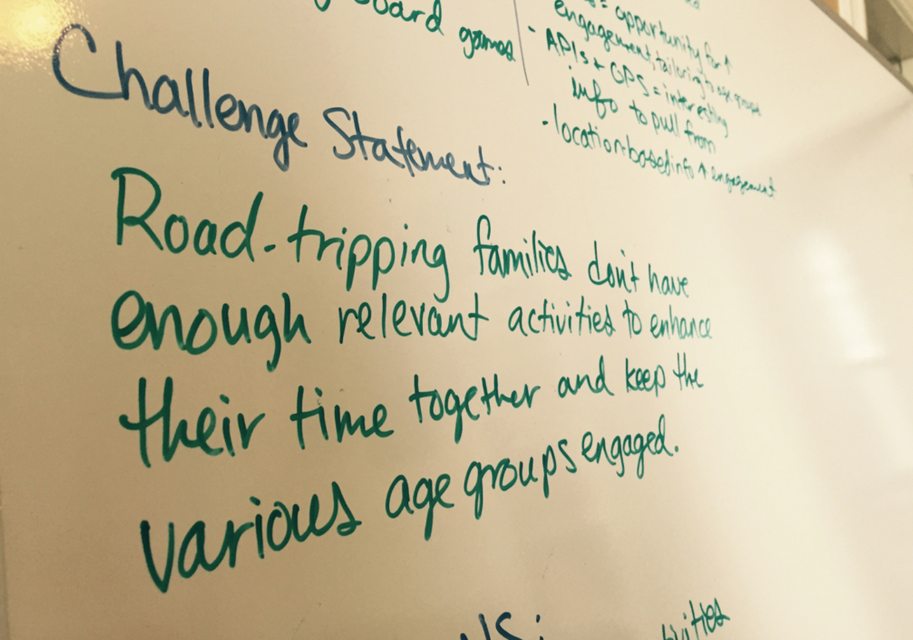
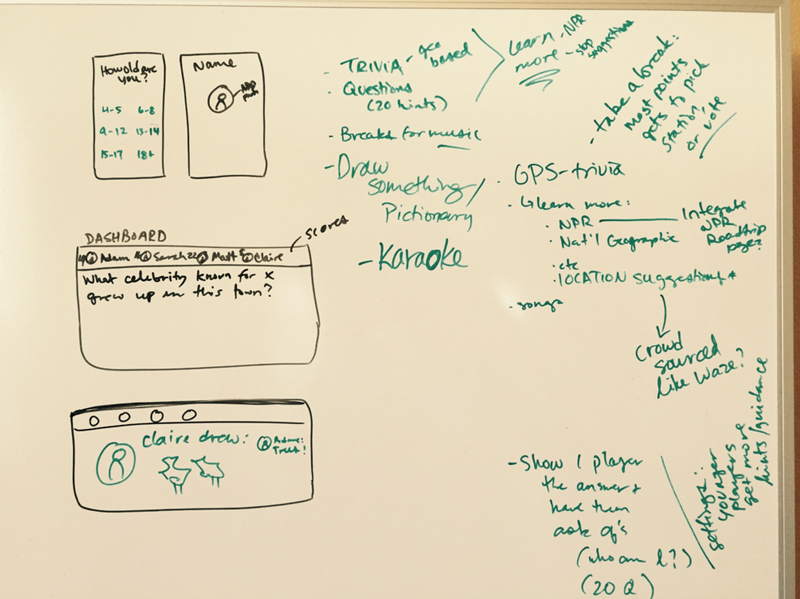

Design is a process: shortened design sprints
Jun 3, 2015

I’ve been wanting to write a post about design processes for a while now. I wrote a full case study about a specific design sprint at thoughtbot, which you can view here, but I wanted to continue the discussion about ways to iterate on this process and how to apply design sprints to different types of challenges and projects.
Very often, I’m not in a position to run a full sprint for a new project, or for a new problem that comes up mid-project. I also generally don’t have the time to go through an entire sprint with side-projects and personal projects outside of work. For these, I’ve started adapting activities from a traditional design sprint into something more flexible.
For sprints in general, the goal is usually to define a product's MVP, as well as create a plan for protyping and user testing.
To walk through my process of a shortened sprint, I’ll be using a hypothetical product challenge to use as an example. In the following sections, I will lay out a timeline of activities with some explanations along the way. I used a whiteboard and paper sketches for various parts of this example sprint.
The (Hypothetical) Challenge
Design an app for road trips with family, especially families including children of various age groups.
The Process
Research
Before I started brainstorming and setting priorities, I needed to gain a better understanding of the problem and user. I looked at a few sources to do some research in order to get a feel for the product space, the needs of users, and the current ways that the needs of users are being met (or not met).
Road trip apps
- Location-based information (nearby historic sites, stops, etc)
- Crowd-sourced driving help (like Waze)
Road trip games
- Who am I / 20 questions style games
- Discussion-based games
User Research
I Interviewed 3 people about their experiences with road trips, as well as read app store reviews for other apps in the road trip space.
Findings from user research:
- People struggle to find engaging activities for various user age groups (family with a 6 year old and a 10 year old, for instance)
- Young children are fairly adept with using smartphones (one user interviewed said daughter was using a smart phone for games around age 4)
- Children get bored, want to watch movies
- Parents don’t want the entire road trip to be the kids watching movies
- Parents want kids to engage with each other and their surroundings
- Traditional road trip games that are often enjoyed/fairly successful: 20 questions, trivia
- Kids have a short attention span
Definitions

Since this product concept is fairly broad, I wanted to create some constraints that would help focus the product and design.
In this next part of the sprint, I used my research and existing constraints to define different areas of the product space.
Who is the customer?
- Families on a road trip with 3+ people (driver can’t participate because he/she needs to be hands-free to drive).
- Family members like a variety of media (music, video, images) and don’t want to be bored.
- People tend to be fairly addicted to their phones and have a short attention span.
- Age ranges from child to adult.
What is the problem this app is trying to solve?
- Road trips are long/potentially boring.
- Families are made up of people with varying ages/interests
- It’s hard to find dynamic/consistent information on the locations you’re driving through (both for practical and entertainment purposes)
- Can’t do traditional family bonding activities like board games (too many pieces, people aren’t sitting in a circle, etc)
What are the opportunities that the technology provides?
- Geographic change offers opportunities to learn and explore based on location-based information
- Phones offer an opportunity for increased engagement and multi-media use (images, videos, sketching, messaging, etc)
- People are already addicted to their devices, so there’s an opportunity to use devices to increase family bonding
- APIs and GPS = interesting sources of information to pull from
- Location-based info has the potential to increase engagement (related to surroundings)
Define the challenge statement

The challenge statement helps identify the job-to-be-done for the sprint or prototype or MVP. It can help identify what the problem is and explore whether that problem is solvable, and how. What is this product, and is it useful?
My challenge statement: Families on road trips don’t have enough relevant activities to enhance their time together and keep the various age groups engaged.
Sketch the critical path
The critical path is helpful to create after a challenge statement has been agreed upon. Once completed, the critical path can give a step-by-step map of the user's most critical experience, from having the problem to solving the problem, and every step in-between. This can help us decide what the MVP is.
Since the goal of this exercise is to create a new product concept, I wanted to look into the future of the product and use that to imagine the value proposition and core, most critical features that a user would use.
Mind Mapping

At this point in the process, I'd often isolate parts of the critical path that need the most work and run a series of "diverging activities, such as mind mapping, crazy eights, and storyboarind. For this exercise, I decided to just use a couple of activities and brainstorm around the entire MVP concept.
Mind mapping is best used to warm up to other exercises like Crazy Eights. These are best for personal ideas, thinking and note taking. The exercise shouldn’t be shared with the group, so that the participant isn’t focusing on what to present outwardly. This inward focus is a great place to really start brainstorming and creating a divergence of ideas.
Crazy Eights

Crazy Eights work really well for coming up with a lot of varied ideas or iterative ideas on an interface very quickly. The time limit doesn't allow for participants to weed out any crazy ideas. It works great early on in the ideation process because it loosens up creative muscles and generates lots of ideas quickly.
For this activity, I folded a piece of paper into 8 sections. The activity is time-boxed to 35 seconds per section, with 10 second breathers in between each one.
At this point…
When I do these activities with a group during full sprints, we also discuss our sketches and create a sort of “heat map” by placing stickers next to the ideas we really like on each other’s sketches. The group then discusses the squares that gather the most stickers, and the discussion often helps the group understand where ideas and concepts are converging. For this design challenge, I did my own evaluation of my sketches and identified ideas that I liked the most.
Generally I would also do some storyboarding of one or two ideas that I drew in Crazy Eights, and then do another couple of rounds of mind mapping/crazy eights/storyboarding to delve into specific parts of the critical path. I would then facilitate or walk through some activities to help bring assumptions to the forefront, and create a final storyboard for what I’d like to prototype.
For the sake of this exercise, I didn’t do these activities. I decided to use what I had sketched to write out a more specific idea of the flow of the game.
Assumptions
I often create an “assumptions table”, so I can keep track of my assumptions and brainstorm ways to validate these assumptions while creating the prototype and user testing the prototype. I write these down throughout the sprint as they come up in conversation. This helps scope out what to prototype and what the MVP should be.
For the sake of this design challenge, I just created a list of assumptions and used that as a guide while creating the initial prototype flow.
Assumptions:
- People in different age groups can participate in games together, as long as certain types of assistance is given to younger children.
- Rewards like getting to choose a karaoke song or choose the next place to eat are enough incentive to make the game fun.
- Pulling in location-based information in the form of trivia and other interactive elements is highly engaging.
- People will want to learn more about location-based trivia in the form of videos and suggestions of road trip stops at historic sites. -People like mixing game types (trivia, 20 questions, pictionary), which keeps things interesting for longer periods of time.
Game prototype flow
Using the challenge statement as a guide, I felt it would be helpful to write out a more detailed critical path from the perspective of one of the potential users. I also sketched some storyboards to go along with these descriptions.
The flow:
Matt, 7 years old, is on a road trip with his siblings and parents. He’s often bored on long trips and doesn’t know how to play games with his older sister, who is 16, and brother, who is 14. He thinks they’re both a lot smarter than he is. He doesn’t own a smartphone, but his siblings do, and his dad is lending him his smartphone to use in the car.
→ Everyone is bored, so they decide to try a road trip app. They pick “Roadtrip It” because it promises to use different types of media (photos, videos, songs), and combines some of their favorite family games (20 questions, trivia, pictionary).
→ Matt is nervous about playing trivia games with his older siblings, but one of the first onboarding screens asks him to upload a photo of himself and asks for his age-range. The age-range question makes him feel slightly better.
→ After Matt fills in his information, his face pops up on a dashboard along his his siblings’ faces.
→ The app plays a quick video for how the game will work before launching the game.
→ The first question is a trivia question, and has multiple-choice images as answers. The question is read out loud, which Matt likes because he doesn’t read as fast as his siblings.
→ Matt rushes to tap one of the answers. The screen flashes "correct" and he leans over and sees that his face pops up on his brother's screen. He sees a point pop up beside his face on the dashboard. He's in the lead!
→ The next round is a pictionary challenge: Matt sees the word “eagle” pop up on his phone screen, along with a photo. There's also space to draw an image. He draws a bird with his finger, and it shows up on his siblings' phones.
→ Matt’s brother is the first to type in a guess for what the image is. He guesses “fish”, which appears on Matt's screen. The word “incorrect” pops up on the screen.
→ Matt’s sister types “eagle” into her phone, which pops up on Matt's screen. The word “correct” appears on the screen.
→ After playing for a while, Matt is still in the lead. The game pauses and prompts him with a reward: “You’re in the lead! Would you like to pick a karaoke song?”
→ Matt picks “Hakuna Matata” from the Lion King.
→ As the song starts playing, the scene from the movie plays on each user's screen, along with words to sing along.
→ The game continues, continuing to switch between different types of questions and activities. Points are counted up and rewards include choosing the next restaurant to eat at, picking a station to listen to, or choosing a karaoke song.
→ Some trivia questions are location-specific, based on where the family is currently driving. The player who gets the answer right can choose to “learn more” about these location-based questions: this includes listening to NPR stories, watching short documentaries, or stopping at historic sites along the way.
→ After playing the game for hours, players have learned about the locations they’ve driven through (via trivia, visiting a historic site, and watching a short video about a famous event that took place locally), played pictionary and trivia, and sang a series of karaoke songs. They’re happy, and have become closer as a family. The kids are so tired from all the fun that they end up sleeping the last leg of the trip.
Wireframing the flow
I did some quick wireframing of some of the main parts of the game, including onboarding from the perspective of one user, and the initial game/question. I keep these very low-fidelity; I’ve found that if I try to put visual design into wireframes, it’s distracting for me and users who I want to show this to. Here are some screenshots:


Finished Product
At this point, the sprint itself is usually finished and I'd transition into prototyping. That being said, I was feeling inspired and wanted to play around with a couple of screens and visual design concepts for the final app. Here's what I came up with:

My general thoughts while creating the visual design for this exercise were:
- I wanted to use illustrations and images wherever possible to create a more visually enriched experience and also appeal to younger users.
- I used Avenir Next, which is a modern, sans-serif font I’ve used before in iOS design. I find it to be very pleasing aesthetically and easy to read.
- I wanted to keep the design very clean and clutter-free, so users know exactly where to tap and what's happening.
- I created these designs in Sketch, and made sure to mirror to my own phone so I could see how the design would look in the context of an actual device.
In Summary
To summarize, here are the main activities I used to conduct a shortened sprint for this hypothetical challenge:
- User research (online and talking to a few people)
- Defining the user and problem
- Create a challenge statement
- Sketch the critical path
- Brainstorm using Mind Mapping
- Generate ideas using Crazy Eights
- Create a list of assumptions
- Storyboard/user flow
You can read more about design sprints from Google Ventures and thoughtbot's design sprint repo.